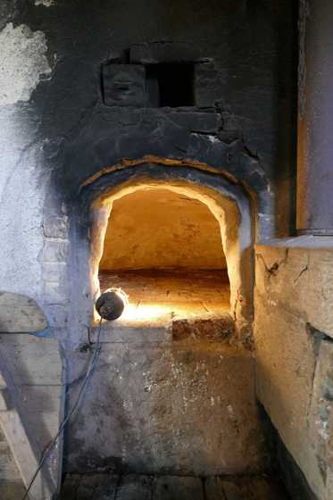
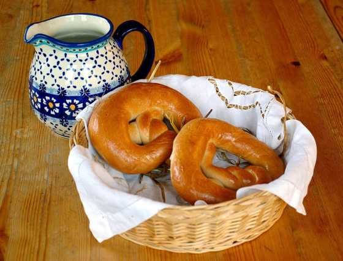

鹿児島県霧島市隼人町小浜 ・ 夫婦で営む小さなパン屋
国産小麦と自家製の発酵種で、
じっくり時間をかけて焼くパン。
BAKER SHIMOFULは、国産小麦と自家製の発酵種を使い、長時間発酵で香りと旨みを引き出すパンを焼く、夫婦で営む小さなパン屋です。
お店の由来・想い
待つことが、おいしさになる。
お店のInstagramのプロフィールでは、「国産小麦と自家製の発酵種を使い、長時間発酵で香りと旨みを引き出すパン」を作っていること、そして「夫婦で営む小さなパン屋」であることが紹介されています。小浜の施設「obama village」の2階にあり、紹介投稿では、ガラス張りの店内から海や桜島が見えると書かれています。
情報源: Instagram @baker_shimoful/obama village 店舗一覧/ブログ紹介記事/紹介投稿
店名の意味や開業の経緯は確認できていないため、載せていません。見出しの言い回しは制作側の表現です。



パン
ハード系と、ほっとする甘いパン。
紹介投稿では、明太フランス、大人のクリームパン、フォカッチャジェノベーゼ、シナモンロールなどが挙げられています。以下の写真は、パンの雰囲気を伝えるフリー素材で、お店の商品そのものではありません。品ぞろえ・価格は日によって変わるため「準備中」としています。

フランスパン・ハード系
香ばしい皮と、小麦の風味を味わうパン。
価格 準備中
サワードウ系の食事パン
発酵種ならではの、ほのかな酸味と深い味わい。
価格 準備中
ロール・惣菜パン
一つで満足、手に取りやすいパン。
価格 準備中
やわらかいパン
ほんのり甘い、しっとりした生地。
価格 準備中
渦巻きの甘いパン
シナモンロールのような、焼き菓子系のパン。
価格 準備中
食パン・トースト
毎日の朝ごはんに。
価格 準備中


営業時間・メニュー詳細・価格: 準備中
口コミ
お客様の声(イメージ例)
以下は制作側が作った例文で、実在のお客様の声ではありません。
皮がぱりっと香ばしくて、噛むほどに小麦の味がします。つい次の一口が欲しくなるパンでした。
窓の外に海が広がる席で、焼きたてのパンをゆっくり。海水浴の帰りにまた寄りたいです。
ハード系だけでなく、クリームパンなどやさしい味のパンもあって、家族みんなで選べました。
アクセス
小浜の海辺、obama village 2階。
| 所在地 | 〒899-5103 鹿児島県霧島市隼人町小浜28 obama village 2F(施設の店舗一覧による) |
|---|---|
| 電話 | 準備中 |
| 営業時間 | 準備中 |
| 定休日 | 準備中 |
| SNS | Instagram @baker_shimoful |
営業時間・定休日は情報源によって異なるため掲載していません。ご来店前にInstagramをご確認ください。